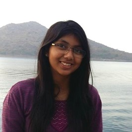
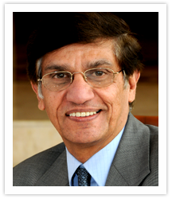

BITS Embryo
Embryo is a project to foster strong collaboration of BITS students and BITS faculty with the alumni and friends of BITS Pilani. Through lecture series and collaborative projects, the students can get exposure to the cutting edge research areas. They also get an opportunity to network with Alumni and friends of BITS, who are reputed academicians and industry leaders. We aim to leverage BITSConnect to bring the alumni closer to the students and faculty. Each and every alumnus can contribute his most valuable resources to BITS Pilani - knowledge and experience. The approach is three-fold: Complement BITS courses through video lecture series Facilitate collaborative research projects between alumni and BITS Expose students to current research trends and provide guidance for pursuing research projects On Jan 9, 2013, BITSConnect 2.0 was inaugurated. A multi-million dollar project which brings state of the art telepresence and interconnectivity to the campuses of BITS; it provides Embryo the platform to conduct high-quality cross campus talks, and to further enhance the remote learning experience that it has been providing across all the campuses for some time now. Embryo aims to help BITS Pilani students become Leaders, Innovators and Entrepreneurs of tomorrow. You can also contribute to Project Embryo. Register with us and we shall get in touch shortly.
About Us
Embryo is a forum for on-line, live and interactive lectures, run by students and faculties of BITS-Pilani. It was conceived and initiated by a group of 6 BITS Pilani Alumni in the Silicon Valley in 2006 with an aim to transform classroom education. Since February, 2006, more than 200 lectures have been successfully conducted in areas as wide ranging as Entrepreneurship, Black Holes, Solar Cells, Science of Smell, Naxalism, Rain water harvesting,Storage Networks, PSOCs, Process Control. In August 2010, Embryo 2.0 was launched. Since then we have conducted a series of lectures. The lecturer works closely with the course faculty and in a few cases, the lecture content is subject to evaluative components. The knowledge of the alumni has thus become an integral part of the BITS curriculum.
Vision
Enrich the learning experience at BITS Pilani.
Mission
To make the academic and industrial experience of the BITS alumni accessible to on-campus students through lectures, collaborative research projects, and exposure to current research trends around the world.
Why Embryo
Although there is no alternative to 'in person' classroom teaching, any University in the world is limited by its on-campus human resources and available expertise. Often, a lecture or two in the right area by the right person can change the course of one's career. Embryo proposes to free education from the barriers of distance, time and human resources. Leveraging web-based technologies, Embryo acts as a bridge between the knowledge seekers (students), and the potential speakers. Such a powerful method truly realizes the dream of border less classrooms and bottomless learning resources
Available Infrastructure
With the advent of BITS Connect2.0 , we now have state of the art telepresence solutions across all campuses thus making the experience even richer.
About BITS Pilani
Birla Institute of Technology and Science (BITS), Pilani is a Leading University in India offering degrees in Engineering, Management, Pharmacy, Sciences, Engineering Technology, Information Systems, General Studies, Finance etc presently at Pilani, Dubai, Goa and Hyderabad campuses. BITS Pilani also offers an array of work integrated learning programmes for HRD of a vast spectrum of Indian corporates.
About BITSAA
BITSAA International Inc. is a not-for-profit organization. The primary purpose of BITSAA International is to engage in charitable and educational activities by raising funds for setting up endowments, creating scholarships, rewarding teaching and research and generally promoting the development of resources at Birla Institute of Technology & Science at Pilani. BITSAA International also aims to strengthen the ties, friendship and communications amongst former students, current students, faculty and friends of the Institute. BITSAA International provides a number of channels for people to stay connected with each other and the Birla Institute of Technology & Science.
Previous Lectures
 ENVIRONMENT AND SUSTAINABILITYRhea Mazumdar Singhal is an entrepreneur who is founder and CEO of Ecoware, India's largest sustainable packaging company 6 June, 2021 |
 WILDLIFE PHOTOGRAPHYJayanth Sharma is a professional wildlife photographer. He is co-founder and CEO at Toehold, a travel and photography company. He is a Sony Ambassador. 4 June, 2021 |
 GRE PANEL DISCUSSIONVarun Nayak is an alumnus of BITS Pilani, Goa campus where he recieved his Bachelor's in Mechanical Engineering. With a GRE score of 327/340 3 April, 2021 |
GRE PANEL DISCUSSIONAbhijith Asok is an alumnus of BITS Pilani, Goa campus. He scored an outstanding 329/340 in the GRE examination and 117/120 in the TOEFL 3 April, 2021 |
 GRE PANEL DISCUSSION335/340, Offered for Masters in Chemical Engineering 3 April, 2021 |
GRE PANEL DISCUSSION332/340, Offered for Masters in Electrical Engineering 3 April, 2021 |
 CAREER IN FINANCERitika Karnani is an alumnus of BITS Pilani and graduated in 2015. She recently completed her MBA from INSEAD, France 21 March, 2021 |
 LIFE OUTSIDE EARTHKate Adamala is an alumnus of Harvard University and specialises in the fields of Synthetic Biology, Astrobiology and Bioengineering. 13 February, 2021 |
 VENTURE CAPITALISTAnirudh Damani is an alumnus of the prestigious Austin College, Texas and Managing Partner at Artha Ventures, India’s first Micro VC firm 6 February, 2021 |
BEING BITSIAN IN RETROSPECTDr. S.P. Kothari graduated from BITS Pilani, Pilani campus with a BE (Hons.) in Chemical Engineering, he was also a Padma Shree Awardee 30 January, 2021 |
BEING BITSIAN IN RETROSPECTPradeep Kashyap is an entrepreneur and founder of MART, a rural marketing consultancy firm which works in emerging markets. 6 August, 2020 |
FILM WRITINGThe personality responsible for coming up, foreseeing, writing, editing, evaluating, and repeating cycles of these for the creation of films like 'Sachin-A Billion Dreams' and many more 2 August, 2020 |
COMPUTATIONAL BIOLOGY AND CHEMISTRYProf. Qiang Cui is a Professor of Chemistry at Boston University. His work involves developing and applying state-of-the-art computational tools 23 July, 2020 |
 CYBER SECURITYNicknamed Spaf is an American professor of computer science at Purdue University and a leading computer security expert. 23 July, 2020 |
CRYPTO CURRENCYDavid L. Yermack is the Albert Fingerhut Professor of Finance and Business Transformation at New York University Stern School of Business. 12 July, 2020 |
GMAT PREPARATION AND APPLICATIONSHe is a BITS Pilani ’15 batch Mechanical Engineering alumnus. He is currently an MBA Candidate at INSEAD, Class of 2020, having scored a very impressive 770 in GMAT 27 June, 2020 |
 UPSC PREPARATIONAnuraj Jain secured AIR 24 in UPSC Civil Services Examination 2018 and he also scored AIR 21 in IFS 2017 exam 14 June, 2020 |
 PUBLISHING RESEARCH PAPERS AND ENTREPRENEURSHIPSubrahmanyam Pulipaka is a BITS Pilani ’16 batch Electrical and Electronics Engineering student. He has published many research papers being a part of IEEE. 3 June, 2020 |
APOGEE
APOGEE, the ISO 9001:2008 certified technical fest of BITS, Pilani is a large scale event that has attracted connoissuers of engineering and technology over the years. It represents the zenith of science and engineering in a landscape of future vissionaries and scientists.
APOGEE Innovation Challenge
Apogee Innovation Challenge is a kernel event of Apogee, which provides a platform for students from different colleges of the country to work on the real life problem statements posed by companies. But how does it work?
- Problem Statement Released By Companies
- Students Form Teams Of 1 To 3 Members
- Teams Select Problem Statements And Start Working On It. They Have To Submit The Solution Before The Specified Deadline
- Judges From Companies Select Top 5 Teams
- Winners Are Usually Rewarded In Terms Of Cash Prizes, Internships Or Goodies
Why participate?
A company can largely benifit from participating in AIC in the following ways:
- By Associating With Apogee Innovation Challenge, The Company Becomes An Event Partner Of Apogee And Would Be Publicised On The Apogee Website And Facebook Page.
- The Company Can Use The Ingenuinity Of Some Of The Brightest Young Minds Of The Country To Get A Pool Of Innovative Approaches For Solving A Particular Problem.
- Being One Of The Major Events Of Apogee And A Unique Concept, This Event Would Get Wide Media Coverages From Leading Media Sources In India.